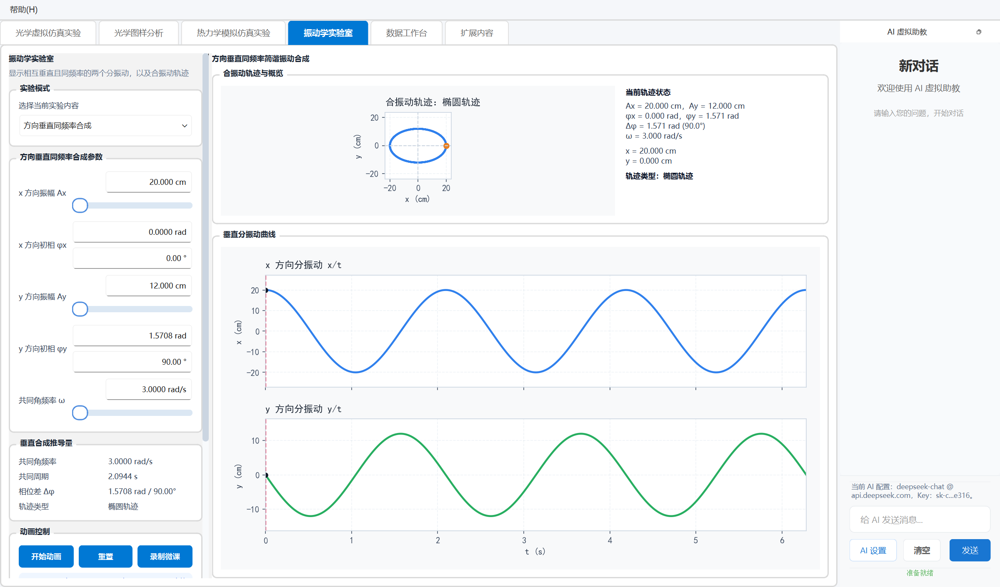

光学虚拟仿真
支持牛顿环、劈尖干涉、双缝干涉、迈克尔逊干涉仪和光栅衍射，参数调整后实时生成图样与模型示意。
物理实验教学仿真与分析平台
将光学仿真、图样分析、热力学过程、振动实验、数据拟合、扩展物理内容与 AI 助教整合到同一套桌面工具中， 让实验观察、参数探究和结果分析形成连续的学习流程。
面向真实教学使用
平台围绕“仿真演示、图样分析、数据处理、扩展探究、智能答疑”组织工作流，适合教师课堂演示、学生实验预习、 课程项目展示和课后自主探究。新版增加开始界面、光电效应、量子干涉、傅里叶频谱分析等内容，展示层次更完整。
核心能力
支持牛顿环、劈尖干涉、双缝干涉、迈克尔逊干涉仪和光栅衍射，参数调整后实时生成图样与模型示意。
从图片或视频中提取亮度分布，完成峰值统计、条纹间距分析和视频条纹变化级数识别。
展示理想气体分子运动、活塞变化和 P-V-T 图像联动，便于解释等温、等压、等容等状态过程。
覆盖简谐振动、同方向合成、拍振和正交合成，支持相位输入、动态图像和 GIF 微课素材导出。
提供样例数据、数据录入、统计分析、自动拟合与不确定度计算，承接真实实验结果处理。
集成傅里叶频谱分析、量子双缝干涉、Mach-Zehnder 单光子干涉仪和光电效应等高阶探究模块。
兼容 OpenAI Chat Completions 风格接口，可结合实验现象、曲线和问题进行原理解释与操作提示。
新版界面
以下截图来自当前最新版程序。界面保留参数控制、图像反馈、曲线结果和 AI 助教区域，便于课堂演示和自主实验切换。

课堂使用路径
选择实验类型，调整波长、缝距、温度、频率、相位或数据输入方式。
实时查看干涉图样、分子运动、振动轨迹、频谱分布和动态曲线。
提取曲线、统计峰值、识别频率成分、拟合模型并计算实验不确定度。
结合 AI 助教整理现象解释、公式关系、误差来源和实验结论。
技术实现
项目以 PyQt6 作为界面底座，结合 NumPy、SciPy、OpenCV、Matplotlib、Pandas 和 PyOpenGL 完成仿真、 图像处理、科学计算和嵌入式图表展示，并通过后台线程处理视频分析与 AI 请求。
Windows 可执行版